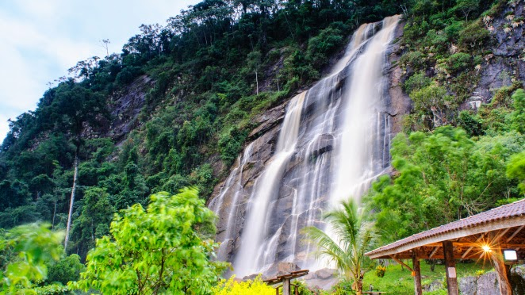
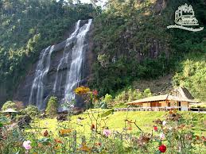
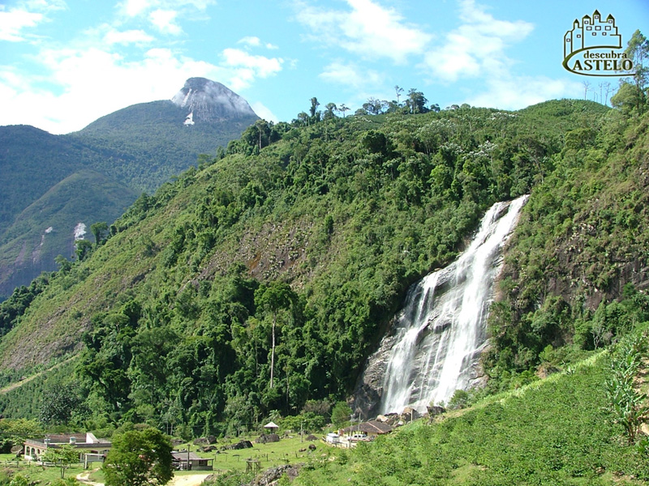

Atuação
Situada a 21 km da sede do município, além da bela queda d’água, o local conta com serviço de lanchonete, restaurante rural, área para camping e rapel. Localizada na propriedade da família Furlan, é muito conhecida pelos praticantes dos esportes de aventura, que sempre após suas atividades se confraternizam no local.
Galeria


